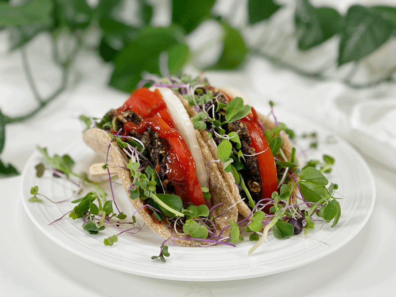

Mushroom Burger Wrap and Salad | Plates of Inspiration
After a full day of mowing the fields, I returned home HUNGRY. Not angry, but I announced my presence as I walked into the house and asked for a clear pathway to the kitchen! Nothing like hard work and fresh air to build an appetite with. Bob and I have been eating this combo for a couple of days now and we never grow tired of it. So, without further ado, let me share today’s dinner with you.

As usual, our plates are void of animal products, gluten, soy, and oil. I didn’t even use nuts or seeds this time. So for those of you with such intolerances… I have a strong feeling that you will enjoy this meal, too. I made the Mushroom Burger Patty recipe, snugged it in an Oat Tortilla, and piled in some microgreens, fresh garden tomatoes, sliced onion, and mustard. I also paired with it a fresh green salad, steamed broccoli, and my vegan Cheese Sauce (sweet potato-based). Shoot, now I’ve gone and made myself hungry again. I hope this plate brings you inspiration and health. blessings, amie sue (Here are a few more photos to get your digestive juices flowing–I hope you don’t mind!)
© AmieSue.com